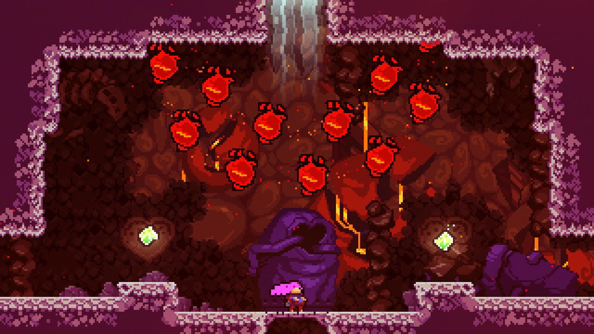
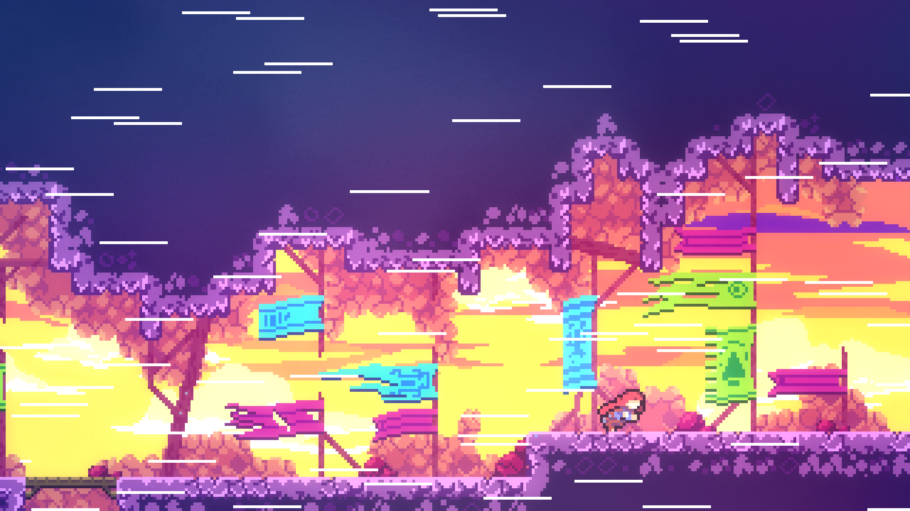
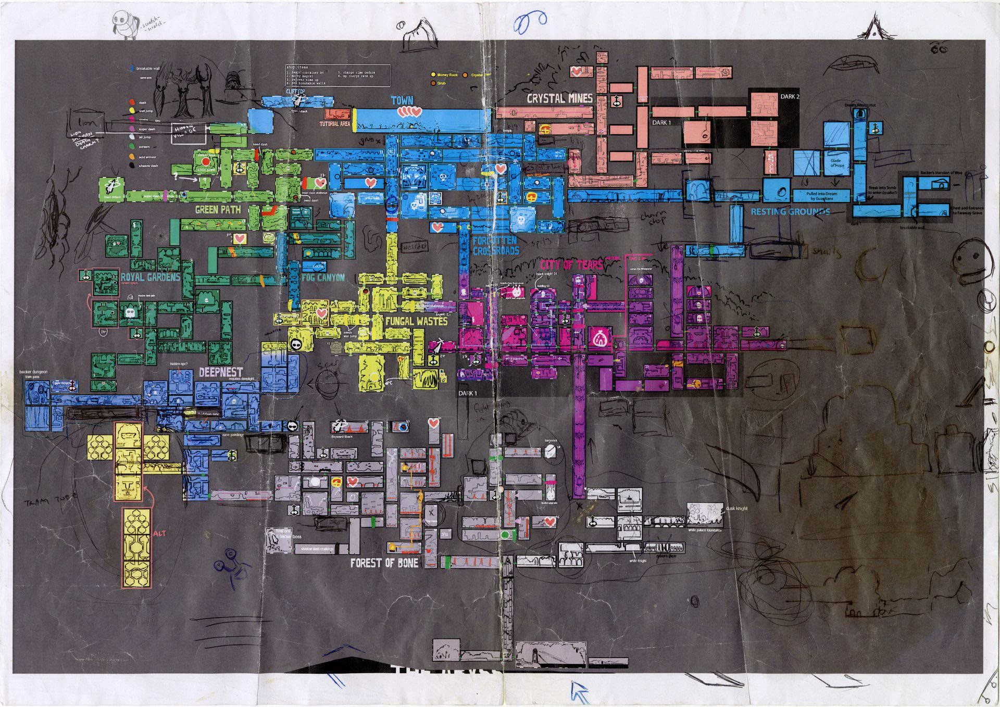

Trong bài này
Tầng 3 · Bài 05
Level design
Không biển chỉ đường, không mũi tên HUD — vậy điều gì khiến người chơi luôn đi đúng hướng? Bài này giải mã landmark, ánh sáng, nhịp độ căng-nghỉ, và quy trình dựng một level từ tờ giấy đầu tiên tới bản blockout.
Sau bài này bạn sẽ
- Dùng landmark và ánh sáng để dẫn hướng người chơi
- Thiết kế nhịp độ căng - nghỉ trong một màn chơi
- Blockout một khu vực nhỏ
Bạn bước vào một căn phòng lạ trong game. Không mũi tên chỉ đường, không minimap, không biển hiệu nào ghi "lối ra". Vậy mà bạn vẫn tự nhiên đi đúng hướng — mắt bị hút về phía một cánh cửa sáng đèn cuối hành lang, hoặc một toà tháp cao vượt lên khỏi mái nhà xung quanh.
Đó không phải may mắn, mà là kết quả của việc ai đó đã dàn dựng không gian bạn đang đứng: chỗ đặt ánh sáng, chỗ đặt vật thể nổi bật, chỗ nào nên căng và chỗ nào nên cho bạn thở. Công việc đó gọi là level design — từ landmark ngoài chân trời tới bản vẽ blockout đầu tiên.
Level design là gì
Level design là công việc dàn dựng không gian và nhịp độ để tạo ra một trải nghiệm cụ thể — không chỉ là vẽ cho không gian đó đẹp. Một hành lang có thể trông rất đẹp nhưng vẫn là level tệ, nếu người chơi lạc đường liên tục hoặc chán vì không có gì thay đổi nhịp độ.
Ranh giới với environment artist khá rõ trong quy trình thực tế: designer dựng blockout — khối hình học thô xác định không gian và luồng di chuyển — rồi environment artist mới tiếp nhận để phủ chi tiết thẩm mỹ lên trên, giữ nguyên ý đồ thiết kế ban đầu. Theo Gorman Dev, environment artist trong một studio AAA "typically manages and handles most of the visual elements seen inside of a level" (quản lý phần lớn yếu tố hình ảnh trong một level) — việc của họ là hình ảnh, không phải luồng chơi.
Dẫn hướng mà không cần biển chỉ đường
Walt Disney có một mẹo cũ khi quay phim: buộc một khúc xúc xích trước ống kính để con chó của mình luôn chạy đúng hướng. Ông mang mẹo đó sang thiết kế công viên, gọi những công trình cao nổi bật là "weenie" — thứ khiến khách tự muốn đi về phía nó. Disney giải thích: "People won't go down a long corridor unless there's something promising at the end." (người ta sẽ không đi hết một hành lang dài trừ khi có thứ gì hứa hẹn ở cuối đường.)
Jesse Schell (tác giả The Art of Game Design) mang khái niệm này vào game, đặt tên "architectural weenie" cho landmark — vật thể hút mắt người chơi về phía mục tiêu. Christopher Totten, trong sách An Architectural Approach to Level Design, trích lại thuật ngữ của Schell rồi nối nó vào khung 5 yếu tố hình ảnh đô thị của Kevin Lynch: Paths, Nodes, Districts, Landmarks và Edges (ranh giới không do đường đi tạo thành). Totten khẳng định: landmark trong khung Lynch và "architectural weenie" là một khái niệm.
Ánh sáng cũng dẫn hướng. Robert Yang (GDC 2018) tóm gọn: "Light for player progression, and highlight exits / critical path." (dùng ánh sáng đánh dấu đường tiến trình, làm nổi bật lối ra và critical path.) Ông cảnh báo thêm: đừng để việc chiếu sáng đến phút cuối, coi nó như một bước trang trí — ánh sáng phải tính từ giai đoạn blockout, vì ảnh hưởng trực tiếp tới việc người chơi có đi đúng hướng hay không.
Một công cụ khác là sightline — "a trajectory of empty open space that offers a possible view of another space" (khoảng không gian mở cho phép nhìn thấy một không gian khác). Sightline chỉ là công cụ người chơi CÓ THỂ dùng, không đảm bảo họ sẽ nhìn đúng chỗ bạn muốn.

Leading lines: hai phe chưa đồng thuận
The Level Design Book xếp "leading lines" — dùng bố cục dẫn mắt người chơi theo một hướng — vào diện đáng ngờ, tự nhận quan điểm này chưa phải chuẩn mực chung của ngành: "we think it's 99% brain poison" (chúng tôi cho rằng nó 99% là chất độc cho não), dù chính họ thừa nhận nhiều nhà thiết kế uy tín khác vẫn dùng nó như công cụ chính thống — chỗ này phải playtest thật, đừng tin chắc lý thuyết bố cục.
Ví dụ màu sắc: Mirror's Edge dùng hệ thống "Runner Vision" tô màu ĐỎ các bề mặt cần tương tác. Nghe ngược đời — level designer Elisabetta Silli thừa nhận tại GDC: "Red is an odd choice because it means danger or stop." (đỏ là lựa chọn kỳ lạ vì nó thường có nghĩa nguy hiểm hoặc dừng lại.) Đây là màu đỏ của Mirror's Edge — màu vàng là đặc trưng của hệ thống tương tự trong Uncharted, đừng nhầm hai game.
Nhịp độ: căng và nghỉ
Đơn vị nhỏ nhất của nhịp độ gọi là beat: "A beat is a small self-contained chunk of a level. A single area, event, activity, or element." (một beat là một mẩu nhỏ, tự khép kín trong level — một khu vực, sự kiện, hoạt động, hoặc yếu tố.) Nhiều beat nối lại thành nhịp điệu của cả màn.
Nguyên tắc cơ bản: xen kẽ cao và thấp. The Level Design Book đặt hẳn một tiêu đề riêng — "Alternate highs and lows." — rồi giải thích ở đoạn khác cùng trang: "Players adjust to prolonged periods of high intensity. Any intense boss fight will feel like a slog after 10+ minutes. To keep it fresh, use occasional downtime as a contrast and palette cleanser, otherwise the player will simply go numb." (người chơi thích nghi với cường độ cao kéo dài — trận boss nào cũng thành nhàm sau hơn 10 phút; thỉnh thoảng cho một quãng nghỉ để làm mới cảm giác, nếu không người chơi sẽ trơ lì.)
Câu nói nổi tiếng nhất về nhịp độ có lẽ là "30 seconds of fun" của Jaime Griesemer (Bungie), tại GDC 2002 khi trình bày về Halo: "In Halo 1, there was maybe 30 seconds of fun that happened over and over and over and over again." (trong Halo 1, có khoảng 30 giây vui thực sự, lặp đi lặp lại nhiều lần.) Ý ông khi đó: chỉ cần tìm ra được 30 giây vui đó, gần như có thể kéo dài nó thành cả một game. Câu này hay bị trích cụt như thể chỉ cần 30 giây gameplay hay là đủ. Năm 2011, chính Griesemer làm rõ lại: đó là một vòng lặp lồng ba tầng thời gian: "you have a 3-second loop inside of a 30-second loop inside of a 3-minute loop that is always different, so you get a unique experience every time." (một vòng lặp 3 giây trong vòng lặp 30 giây trong vòng lặp 3 phút, luôn khác nhau, nên mỗi lần chơi là một trải nghiệm riêng.)
Áp dụng cụ thể: một phân tích Uncharted 2 — không phải phát biểu chính thức của Naughty Dog, mà là phân tích thứ cấp gọi mô hình này là "heartbeat" — chỉ ra toàn game có ba đỉnh cường độ, chỉ một đoạn trũng thấp (thường ngay sau đỉnh cao nhất để tạo tương phản), và cố tình không kết ở đúng lúc cường độ cao nhất để tránh cảm giác trống rỗng.
Trên mobile, nhịp độ khó giữ hơn vì mỗi màn rất ngắn. Harry Nesbitt (Lead Artist & Programmer, đội Alto's Odyssey ở Snowman) mô tả kỹ thuật trộn nội dung sinh ngẫu nhiên với những đoạn ông gọi là "hand-crafted" — dàn dựng thủ công — để giữ nhịp độ khỏi đơn điệu hay lặp nhàm chán.


Hình dạng của màn chơi
Level design có một bộ "hình dạng" lặp lại qua nhiều game, gọi là typology — biết tên các dạng này giúp designer trao đổi ý tưởng nhanh, không cần vẽ lại từ đầu mỗi lần.
| Dạng | Hình dung | Ví dụ | Dùng khi nào |
|---|---|---|---|
| Corridor | Hành lang gần như thẳng, ít rẽ nhánh | P.T. | Kiểm soát chặt nhịp độ, không để lạc |
| Hub-and-spoke | Khu trung tâm, nhiều nhánh toả ra rồi quay lại | BioShock (Medical Pavilion) | Người chơi tự chọn thứ tự khám phá, vẫn có một mốc chung |
| Loopback | Tuyến tính nhưng vòng lại gần điểm xuất phát | Dungeon trong Skyrim | Tạo cảm giác đi trọn một vòng, không quay lại đường cũ |
| Arena / Combat Bowl | Không gian mở, nhiều lane và cover ở giữa | DOOM II, màn "Dead Simple" | Trọng tâm màn là chiến đấu nhiều kẻ địch cùng lúc |
| Switchback | Hành lang cụt, chỉ thấy lối ra khi quay đầu | Dear Esther | Tạo bất ngờ nhẹ hoặc kiểm soát góc nhìn lúc quay lại |

Trong màn combat, ba khái niệm hay đi cùng nhau. Cover là bất kỳ vật thể hay cấu trúc nào chặn sightline hoặc che chắn người chơi khỏi hoả lực. Cover tạo ra kill zone, theo Josh Bridge: "the area in which the player and/or AI is without cover and can be fired directly upon, and potentially killed." (khu vực không có cover, có thể bị bắn trúng và chết.) Và verticality — dựng combat zone theo chiều dọc — mở thêm lựa chọn chiến thuật giữa bị dồn xuống thấp và chiếm cao điểm.
Dạy người chơi qua không gian
Koichi Hayashida, đạo diễn Super Mario 3D Land/3D World, mô tả khuôn 4 bước ông dùng để dạy một cơ chế mới trong một màn Mario: "First, you have to learn how to use that gameplay mechanic, and then the stage will offer you a slightly more complicated scenario in which you have to use it. And then the next step is something crazy happens that makes you think about it in a way you weren't expecting. And then you get to demonstrate, finally, what sort of mastery you've gained over it." (học dùng cơ chế → gặp tình huống phức tạp hơn → có chuyện bất ngờ buộc bạn nghĩ khác đi → cuối cùng được thể hiện mức thành thạo đã đạt.)
Hayashida sau đó tự so sánh cấu trúc này với truyện tranh 4 khung Nhật, gọi là kishoutenketsu. Cần nói rõ: ông chỉ nói 4 bước "rất giống" kishoutenketsu, không hề gán nhãn từng bước là ki, sho, ten, ketsu — đây là phép so sánh do chính ông đưa ra để dễ hình dung, không phải một lý thuyết level design có sẵn.
Từ giấy tới blockout
Quy trình phổ biến đi qua nhiều lớp nháp rẻ trước khi tốn công dựng hình học 3D: ý tưởng lớn → bubble diagram → bản vẽ mặt bằng 2D trên giấy → blockout 3D → playtest → lặp lại → art pass.
Bubble diagram phác nhanh từng khu vực thành một "bong bóng", nối bằng mũi tên thể hiện hướng di chuyển. The Level Design Book khuyến khích vẽ nhiều bản, kể cả bản tệ: phát hiện vấn đề thiết kế càng sớm thì sửa càng rẻ, và luôn có thể vẽ bản khác để thử cách sắp xếp khác.
Steve Lee (level designer Dishonored 2, Arkane) định nghĩa blockout: "The blockout stage is about figuring out what your level is supposed to be by making a rough but representative version of it quickly, testing it, and then iterating on it as much as you can." (tìm ra level của bạn thực chất nên là gì, bằng một bản dựng nhanh, thô nhưng đại diện được, đem test, rồi lặp lại nhiều nhất có thể.)
Khi dựng blockout, phải đo không gian theo khả năng thật của nhân vật — gọi là metrics: chiều cao nhảy, tốc độ chạy, chiều rộng hành lang. The Level Design Book nhắc thẳng: "Metrics are useful, but metrics are not magic." (metrics hữu ích, nhưng không phải phép màu.) Quake có bộ số liệu riêng — hành lang tiêu chuẩn "128u+", trần cao "128u" — nhưng đó là con số của MỘT game cụ thể, không phải chuẩn chung.
Công cụ cho người mới: giấy và bút vẫn rẻ nhất để thử bố cục trước khi mở phần mềm; Unity ProBuilder dựng khối 3D trực tiếp trong Unity qua Package Manager; Unreal Modeling Mode làm việc tương tự trong Unreal Engine; Tiled dùng cho level 2D dạng tilemap.
Soi một màn chơi bất kỳ
Đọc cách một level dẫn hướng
- Người chơi biết phải đi đâu nhờ cái gì — landmark, ánh sáng, hay sightline?
- Chỗ nào trong màn là nhịp nghỉ, ngay sau đoạn căng thẳng nhất?
- Nếu tắt hết HUD và minimap, màn này còn dẫn hướng được không?
Sai lầm hay gặp
5 sai lầm hay gặp trong level design
Làm art trước khi blockout xong — xoá một khối hình học thô rất rẻ, vứt bỏ art đã hoàn chỉnh thì đắt và lãng phí.
Không playtest — phần lớn thời gian dựng blockout không sống sót qua buổi playtest đầu tiên.
Không gian quá to so với nhân vật — dựng theo cảm tính thay vì đối chiếu tốc độ và tầm nhảy thật.
Nhồi quá nhiều cover thành mê cung — cover đặt quá dày khiến người chơi mất khả năng theo dõi toàn cảnh trận đấu.
Kết màn đúng lúc cường độ cao nhất — dễ gây cảm giác trống rỗng ngay sau khi màn hoặc game hạ màn.
Thực hành: blockout một khu vực nhỏ
Người chơi phải tìm chìa khoá mở cửa thoát
- Vẽ bubble diagram: 3-5 bong bóng (lối vào, khu tìm chìa khoá, cửa thoát...), nối bằng mũi tên thể hiện hướng di chuyển.
- Chuyển bubble diagram thành bản vẽ mặt bằng 2D trên giấy: vẽ tường, cửa, vị trí đặt chìa khoá.
- Blockout khu vực đó bằng khối hình đơn giản — trên giấy, Unity ProBuilder, Unreal Modeling Mode, hoặc Tiled nếu làm 2D. Chỉ cần khối thô, chưa cần chi tiết.
- Đặt một landmark hoặc nguồn sáng để người chơi tự tìm ra hướng tới khu vực chứa chìa khoá — không dùng text hay HUD chỉ dẫn.
- Nhờ một người khác thử đi từ lối vào tới khi lấy được chìa khoá và mở cửa thoát. Ghi lại chỗ nào khiến họ lạc đường.
Xem gợi ý
Nếu người thử đứng yên nhìn quanh không biết đi đâu: thêm một landmark nhìn thấy được ngay từ điểm bắt đầu, hoặc tăng tương phản ánh sáng giữa lối đúng và lối sai.
Tự kiểm tra
Câu "30 seconds of fun" của Jaime Griesemer, khi chính ông làm rõ lại vào năm 2011, thực chất mô tả điều gì?
Griesemer nói rõ trong phỏng vấn Engadget 2011: nested loop 3 giây/30 giây/3 phút "luôn khác nhau, nên bạn có trải nghiệm độc nhất mỗi lần" — khác hẳn cách hiểu phổ biến (và sai) là "chỉ cần 30 giây gameplay hay là đủ, lặp lại y hệt". Đáp án A là chính hiểu lầm mà câu nói ngắn hay gây ra. Đáp án C không liên quan tới nội dung Griesemer đề cập.
The Level Design Book gọi leading lines (dùng bố cục dẫn mắt người chơi) là "99% brain poison". Kết luận thực dụng nào đúng với tinh thần tranh luận này?
Chính The Level Design Book thừa nhận "other credible designers disagree" — tức nhiều nhà thiết kế uy tín khác vẫn coi leading lines là công cụ chính thống. Không có bằng chứng khoa học "phản bác hoàn toàn" nào được đưa ra, nên đáp án A quá tuyệt đối. Đáp án B cũng sai vì bài học nhấn mạnh đây là điểm gây tranh cãi, không phải chân lý.
Theo định nghĩa đầy đủ của Steve Lee, giai đoạn blockout dùng để làm gì?
Steve Lee định nghĩa blockout là bước "figuring out what your level is supposed to be" bằng bản dựng thô, rồi test và lặp lại — đúng đáp án A. Đáp án B là công việc của art pass, diễn ra sau blockout. Đáp án C sai vì blockout chính là thứ CẦN được playtest, không thay thế nó.
Hệ thống "Runner Vision" trong Mirror's Edge dùng màu gì để báo hiệu đường đi, và vì sao Elisabetta Silli gọi đó là lựa chọn "kỳ lạ"?
Silli nói thẳng: "Red is an odd choice because it means danger or stop" — Mirror's Edge dùng màu đỏ. Đáp án A nhầm với Uncharted, nơi dùng màu vàng (yellow paint) cho các bề mặt leo trèo. Đáp án C không khớp với bất kỳ nguồn nào về Mirror's Edge.
Ôn nhanh
Chốt lại bài
Nhớ 3 điều
- 1 Landmark và ánh sáng dẫn hướng không cần HUD (Walt Disney; Jesse Schell qua Totten; Robert Yang) — nhưng leading lines vẫn là vùng tranh cãi giữa các nhà thiết kế, phải playtest thay vì tin chắc lý thuyết bố cục.
- 2 Nhịp độ cần xen kẽ cao - thấp theo từng beat; "30 seconds of fun" của Griesemer thực chất là một vòng lặp lồng ba tầng thời gian, không phải "30 giây là đủ".
- 3 Càng phát hiện vấn đề sớm càng rẻ — bubble diagram tệ là dấu hiệu tốt, blockout dùng để tìm ra level nên là gì trước khi làm art, và metrics phải đo theo khả năng nhân vật, không theo cảm tính.
Đọc thêm
-
Sách
An Architectural Approach to Level Design — chương 3, Basic Gamespaces
Nguồn gốc "architectural weenie" (trích lại từ Jesse Schell) và khung 5 yếu tố Kevin Lynch áp vào sandbox gamespace.
-
Bài viết
Weenie (design)
Câu chuyện gốc và quote của Walt Disney, John Hench về weenie.
-
Bài viết
GDC 2018: How To Light A Level, slides and transcript
Quy trình chiếu sáng dẫn hướng người chơi, cảnh báo không để ánh sáng đến phút cuối.
-
Bài viết
Half-Minute Halo: An Interview With Jaime Griesemer
Nguồn đầy đủ của "30 seconds of fun" và nested loop 3 giây/30 giây/3 phút.
-
Bài viết
Composition
Định nghĩa sightline và tranh luận về leading lines dùng xuyên bài.
-
Bài viết
Pacing
Định nghĩa beat và nguyên tắc xen kẽ cường độ cao thấp.
-
Bài viết
Typology
Các dạng bố cục màn chơi và ví dụ game dùng trong bảng so sánh.
-
Bài viết
The Secret to Mario Level Design
Nguồn 4 bước dạy cơ chế trong một màn Mario và liên hệ kishoutenketsu.
-
Bài viết
From pen-and-paper to blockouts: How level designers craft iconic stealthy encounters
Định nghĩa blockout và giá trị của bước giấy trước khi dựng hình học thật.
-
Bài viết
Anatomy of a Combat Zone
Định nghĩa combat zone, kill zone, verticality dùng trong phần hình dạng màn chơi.